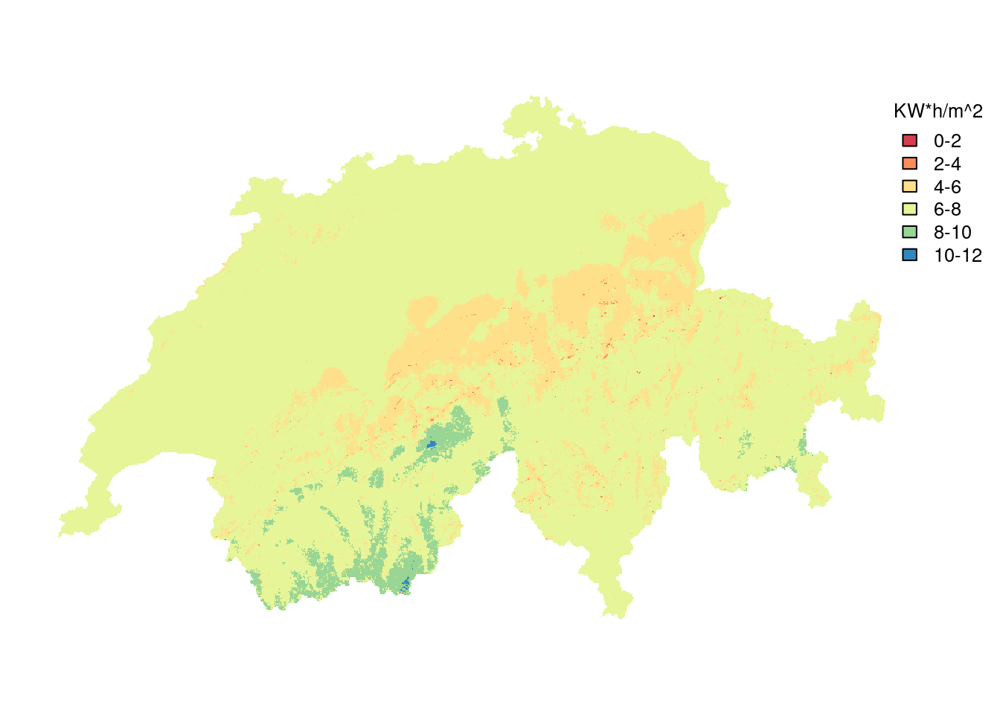

Libraries used for data processing
library(sf)
library(terra)
library(dplyr)
library(units)
library(sfarrow)
library(readr)Switzerland’s solar radiation potential by land types
The Sunwell group utilized solar radiation modeling to estimate the potential solar energy (measured in Kilowatt hours per square meter) across Switzerland at a 25m resolution. The objective of this study is to determine the solar potential for different land use categories, including (1) agricultural areas, (2) standing water, and (3) areas adjacent to national roads. Each of these three categories is further divided into subcategories, which will be elaborated on below.
This report presents a detailed overview of the entire processing pipeline and showcases the findings. It is composed using quarto, which integrates code into the document. However, the document was constructed using cached outputs rather than performing intensive computations.
library(sf)
library(terra)
library(dplyr)
library(units)
library(sfarrow)
library(readr)library(tmap)
library(units)
library(stringr)
options("sf_max.plot"=1)
# experimental: dont print the "[" and "]" sorrounding the units
units_options("group" = c("",""))
print_with_units <- function(input, output_unit = NULL, digits = 2, big.mark = "'", sep = " ", scientific = FALSE, ...){
if(is.null(output_unit)){
output_unit <- units(input)
}
val <- set_units(input, output_unit,mode = "standard")
if(!is.null(digits)){
val <- round(val, digits = digits)
}
capture.output(print(val, digits = 1, scientific = scientific, big.mark = big.mark))
# paste(
# formatC(as.numeric(val),digits = digits, format = format,big.mark = big.mark),
# units::deparse_unit(val),
# sep = sep)
}# extract values from a raster file, which has units
extract_with_units <- function(rasterfile, vector, output_unit = NULL, fun = "mean"){
input_unit <- units(rasterfile)
stopifnot(input_unit != "")
if(is.null(output_unit)){
output_unit <- input_unit
}
vector_vect <- vect(vector)
extracted <- terra::extract(rasterfile,vector_vect,fun = fun)[,2]
extracted |>
units::set_units(input_unit,mode = "standard") |>
set_units(output_unit,mode = "standard")
}
global_with_units <- function(raster, fun = "mean", na.rm = TRUE, output_unit = NULL){
input_unit <- units(raster)
stopifnot(input_unit != "")
if(is.null(output_unit)){
output_unit <- input_unit
}
res <- global(raster, fun, na.rm = na.rm)
res <- res[,1]
units(res) <- input_unit
set_units(res, output_unit,mode = "standard")
}The data for this analysis was mostly gathered by the Sunwell group. The core of the analysis is the raster data mentioned above and described in more detail below. add more information
Table 1 is a listing of all the datasets used in this analysis. This data is provided by Sunwell and is described in more detail here.
| Dataset | Provider | Data Type | Filename(s) |
|---|---|---|---|
| Winter Production (30 Degree tilt) | Sunnwell | Raster (Geotiff), 25m Resolution, W/m2 | tilt_30_winter.tif |
| Summer Production (30 Degree tilt) | Sunnwell | Raster (Geotiff), 25m Resolution, W/m2 | tilt_30_summer.tif |
| Standing Water | swisstopo | Polygon data (shapefile) | OBJEKTART_Stehende Gewaesser.shp |
| Dams | swisstopo | Polygon data (shapefile) | OBJEKTART_Staumauer.shp |
| Farm Land | Cantons (provided via geodienste.ch) | Polygon data (shapefile) | perimeter_ln_sf.shp; lwb_perimeter_ln_sf_lv95.gpkg |
| Roads | swisstopo | Line data (shapefile) | swissTLM3D_TLM_STRASSE.shp |

Before processing the datasets described in Table 1, some preprocessing steps were taken. These steps were done using the command line tools gdal and ogr2ogr and are documented below.
Preprocessing invoved the following steps:
# Reporject rasterdata to EPSG 2056
DIR=data/Dataset_SONNENLAND/Radiation
gdalwarp -t_srs EPSG:2056 -tr 25 25 -overwrite $DIR/tilt_30_summer.tif $DIR/tilt_30_summer_2056.tif
gdalwarp -t_srs EPSG:2056 -tr 25 25 -overwrite $DIR/tilt_30_winter.tif $DIR/tilt_30_winter_2056.tif
# Merge the two vector datasets into one single geopackage
DIR2=data/Dataset_SONNENLAND/Classification/Standing_Water
ogr2ogr $DIR2/stehende_gewaesser_merged.gpkg $DIR2/"OST/OBJEKTART_Stehende Gewaesser.shp" -nln stehende_gewaesser
ogr2ogr $DIR2/stehende_gewaesser_merged.gpkg $DIR2/"WEST/OBJEKTART_Stehende Gewaesser.shp" -nln stehende_gewaesser -append
ogr2ogr $DIR2/stehende_gewaesser_merged.parquet $DIR2/stehende_gewaesser_merged.gpkg
# convert swissboundaries into a geopackage
DIR3=data/swissboundaries3d_2023-01_2056_5728.gdb
ogr2ogr $DIR3/swissBOUNDARIES3D_1_4_LV95_LN02.gpkg \
$DIR3/swissBOUNDARIES3D_1_4_LV95_LN02.gdb
DIR4=data/Dataset_SONNENLAND/Classification/Agricultural/Farming_most_cantons/shapefiles/lwb_perimeter_ln_sf
ogr2ogr $DIR4/perimeter_ln_sf.parquet $DIR4/perimeter_ln_sf.shp## File paths ##################################################################
summer_path <- "data/Dataset_SONNENLAND/Radiation/tilt_30_summer_2056.tif"
swissboundaries_path <- "data/swissboundaries3d_2023-01_2056_5728.gdb/swissBOUNDARIES3D_1_4_LV95_LN02.gpkg"
stehende_gewaesser_path <- "data/Dataset_SONNENLAND/Classification/Standing_Water/stehende_gewaesser_merged.parquet"
staumauer_path <- "data/Dataset_SONNENLAND/Classification/DAMS/OBJEKTART_Staumauer.shp"
# Landw. Bewirtschaftung: Perimeter LN- und Sömmerungsflächen
lwb_path <- "data/Dataset_SONNENLAND/Classification/Agricultural/Farming_most_cantons/shapefiles/lwb_perimeter_ln_sf/perimeter_ln_sf.parquet"
## Switzerland's borders #######################################################
schweiz <- st_read(swissboundaries_path, "TLM_LANDESGEBIET") |>
st_zm() |>
filter(NAME != "Liechtenstein") |>
st_union() |>
st_as_sf()
st_geometry(schweiz) <- "geom"
st_layers(swissboundaries_path)
cantons <- st_read(swissboundaries_path, "TLM_KANTONSGEBIET") |>
st_zm() |>
group_by(NAME) |>
summarise()
canton_names <- read_csv("data/cantons.csv") |> arrange(canton_long)
# test
# anti_join(cantons, canton_names, by = c("NAME" = "canton_long"))
cantons <- left_join(cantons, canton_names, by = c("NAME" = "canton_long"))
## Solar potential raster ######################################################
summer_rast <- rast(summer_path)
# !time!
summer_ch <- crop(summer_rast, vect(schweiz))
summer_ch <- mask(summer_ch, vect(schweiz),filename = "data-intermediate/summer-ch.tif", overwrite = TRUE)
units(summer_ch) <- "W*h/m^2"
# !time!
schweiz$radiation_mean <- global_with_units(summer_ch)
schweiz$area <- st_area(schweiz)
schweiz$radiation_total <- schweiz$radiation_mean*schweiz$area
save(schweiz, file = "data-intermediate/schweiz.Rda")
## Standing Water ##############################################################
stehende_gewaesser <- sfarrow::st_read_parquet(stehende_gewaesser_path) |>
st_zm() |>
st_set_crs(2056)
staumauern <- st_read("data/Dataset_SONNENLAND/Classification/DAMS/OBJEKTART_Staumauer.shp")
# I had initially thought that we would have select lakes within a distance to
# "staumauern" and so introduce a bit of tolerance. It turns out however, that all
# "staumauern" actually intersect the "stauseen" they are closest to, so the distance is
# usually 0. They usually touch (but not always), but they always intersect.
# !time!
stehende_gewaesser <- st_join(stehende_gewaesser, transmute(staumauern, staumauer = row_number()))
# !time!
stehende_gewaesser$radiation_mean <- extract_with_units(summer_ch, stehende_gewaesser)
stehende_gewaesser$area <- st_area(stehende_gewaesser)
stehende_gewaesser$radiation_total <- stehende_gewaesser$radiation_mean * stehende_gewaesser$area
stehende_gewaesser <- select(stehende_gewaesser, radiation_mean, area, radiation_total,staumauer)
save(stehende_gewaesser, file = "data-intermediate/stehende_gewaesser.Rda")
## Agriculture #################################################################
lwb <- sfarrow::st_read_parquet(lwb_path)
units(lwb$flaeche_m2) <- "m^2"
# !time!
lwb_summer <- extract_with_units(summer_ch, lwb)
lwb[2,] |> st_area()
lwb_available_cantons <- unique(lwb$kanton)
lwb_unavailable_cantons <- cantons$canton_short[!(cantons$canton_short %in% lwb_available_cantons)]
save(lwb_unavailable_cantons, file = "data-intermediate/lwb_unavailable_cantons.Rda")load("data-intermediate/schweiz.Rda")
area_ch <- print_with_units(schweiz$area, "km^2",digits = 0)
radiation_ch_frac <- schweiz$radiation_total*0.5*0.2
radiation_total_str <- print_with_units(schweiz$radiation_total, "TW*h")
radiation_ch_frac_str <- print_with_units(radiation_ch_frac, output_unit = "TW*h",digits = 0)This passage presents an analysis of the solar energy potential in Switzerland during the summer season. The total radiation during this period across the entire country, which has an area of 41’301 km^2, is estimated to be 27’448 h*TW during the summer months. However, not all of this radiation can be harnessed by solar panels, as the type of panel used affects the amount of radiation that is captured. In this study, the fraction of radiation that falls onto a solar panel is assumed to be 0.5, or 50%, based on the global capture rate (GCR).
Additionally, solar panels have an efficiency rate that determines how much of the captured radiation can be converted into usable energy. In this study, the efficiency rate is assumed to be 0.2, or 20%, meaning that only 20% of the solar radiation captured by the panel can be converted into electricity.
Using these assumptions, the energy potential for a given area can be calculated using the following formula:
\[E_{pot} = \text{Radiation} \times 0.5 \times 0.2\]
Thus, for the entire country of Switzerland, the energy potential during the summer season is estimated to be 2’745 h*TW.
load("data-intermediate/stehende_gewaesser.Rda")
stehende_gewaesser_summer_total <- sum(stehende_gewaesser$radiation_total, na.rm = TRUE)
stehende_gewaesser_summer_frac <- stehende_gewaesser_summer_total*0.5*0.2
stehende_gewaesser_summer_frac_str <- print_with_units(stehende_gewaesser_summer_frac, "TW*h")
percent_pretty <- \(x, digits = 2, append = "%", sep = " ") paste(formatC(as.numeric(x),format = "f",digits = digits), append, sep = sep)
gewaesser_percent <- percent_pretty(stehende_gewaesser_summer_frac/radiation_ch_frac*100)The energy potential for standing water, which takes into account both the GCR and efficiency rate, is estimated to be 55 h*TW. This potential represents approximately 1.99 % of the overall solar potential in Switzerland.
It is important to differentiate between two types of standing water: artificial bodies of water primarily utilized for power production and natural bodies of water. The former category has distinct characteristics that make it an attractive location for solar power generation. (be more specific here) To categorize standing water, the dataset “Staumauer” (hearafter referred to as “dams”) was used as a reference. All standing waters that intersect a dam are classified as artificial reservoirs. In contrast, all standing waters that do not intersect a dam are considered natural.
stehende_gewaesser_by_type <- stehende_gewaesser |>
st_drop_geometry() |>
group_by(Type = ifelse(is.na(staumauer),"Natural","Reservoir")) |>
summarise(
radiation_total = set_units(sum(radiation_total, na.rm = TRUE), "GW*h"),
) |>
mutate(
Radiation_corrected = radiation_total*0.5*0.2,
Percentage_of_national = percent_pretty(Radiation_corrected/radiation_ch_frac*100)
)
knitr::kable(stehende_gewaesser_by_type, col.names = str_replace_all(colnames(stehende_gewaesser_by_type), "_", " "))| Type | radiation total | Radiation corrected | Percentage of national |
|---|---|---|---|
| Natural | 488923.38 GW*h | 48892.338 GW*h | 1.78 % |
| Reservoir | 57024.67 GW*h | 5702.467 GW*h | 0.21 % |
# Calculated outside R for speed
# This process takes approx 1 - 2h
# The code was not run as it's written here, I've cleaned it up a little
rasterdir=data/Dataset_SONNENLAND/Radiation
lwbdir=data/Dataset_SONNENLAND/Classification/Agricultural/Farming_most_cantons/shapefiles/lwb_perimeter_ln_sf
intermediatedir=data-intermediate
pkextractogr -i $rasterdir/tilt_30_summer_2056.tif -s $lwbdir/perimeter_ln_sf.shp -r mean -f CSV -o $intermediatedir/lwb_summer_mean.csv
# The above computation caused many warnings (maxed out at 1'000):
# TopologyException: side location conflict at 2634055.9960000003 1201497.003. This can occur if the input geometry is invalid.
# More than 1000 errors or warnings have been reported. No more will be reported from now.
# it might be wise to transform to geopackage and makevalid?